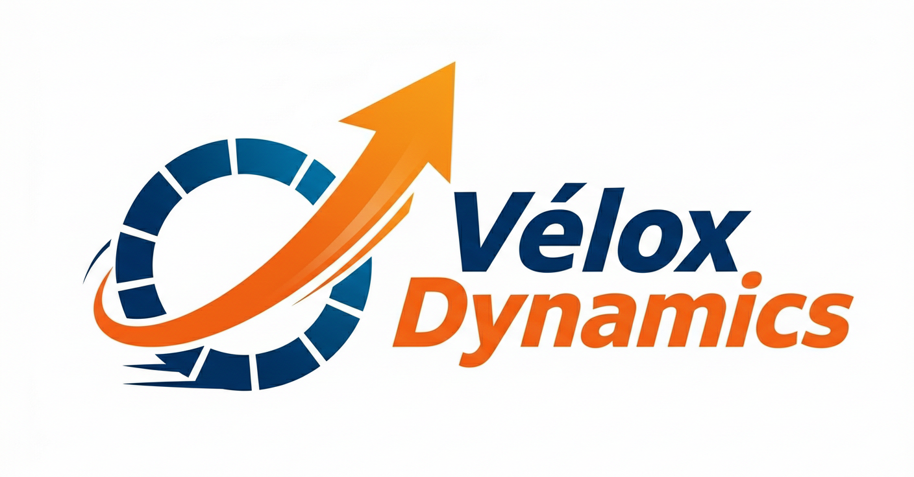
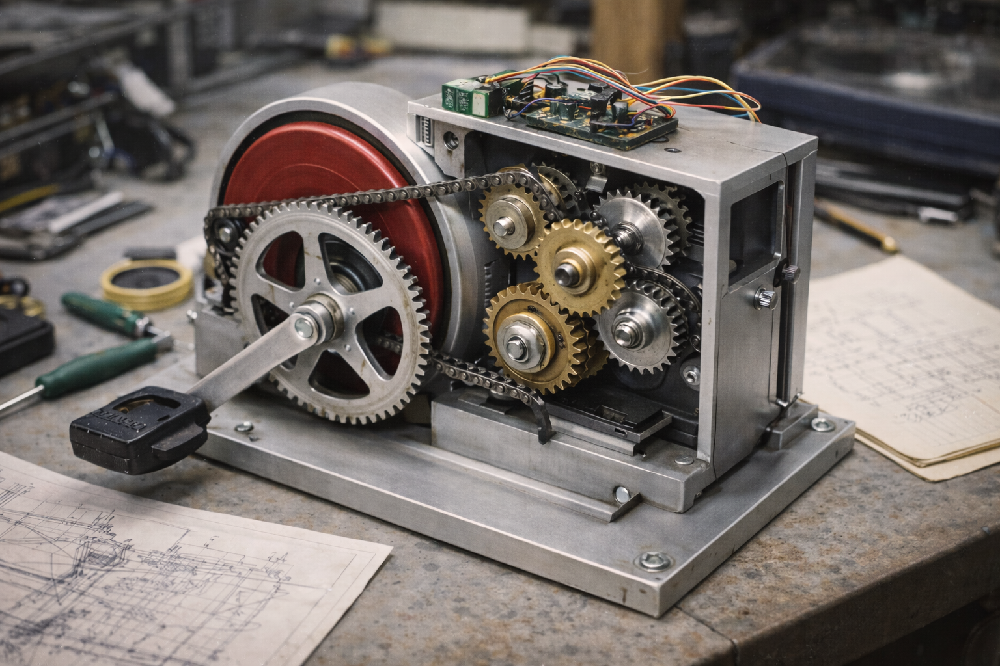
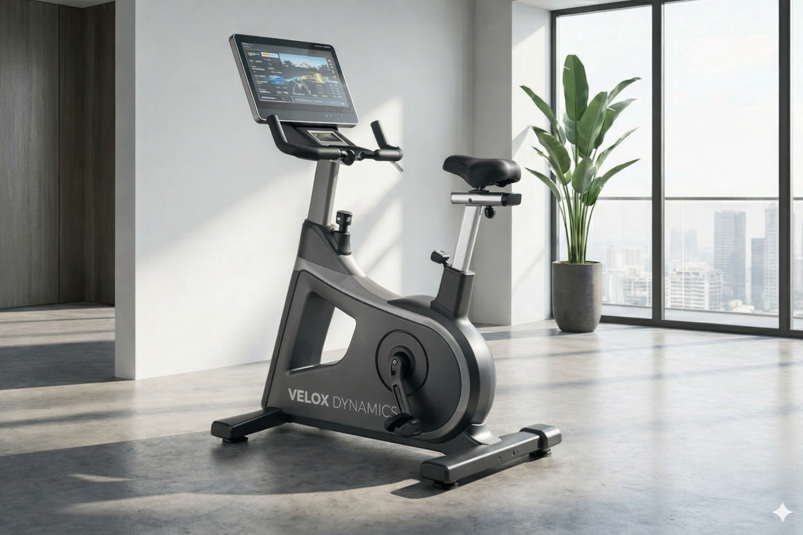
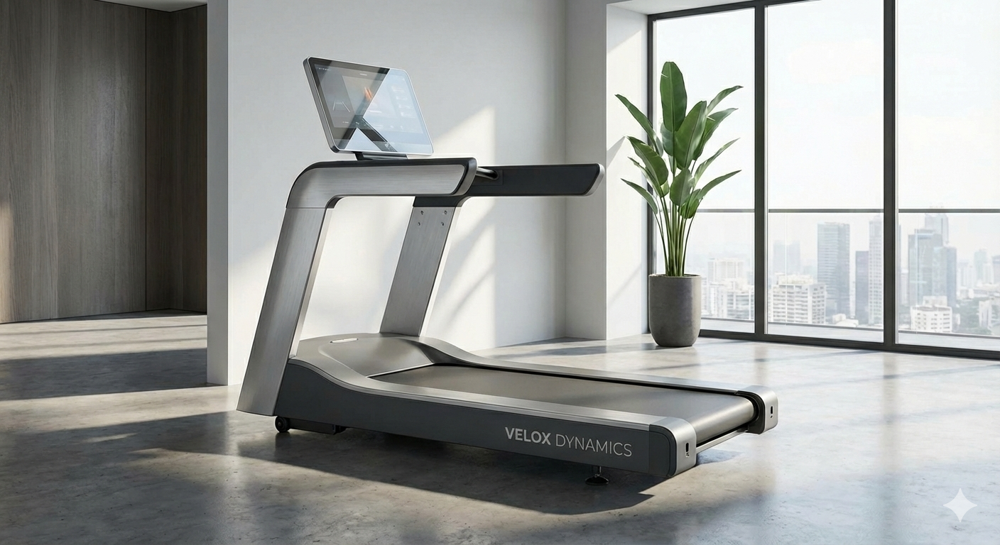
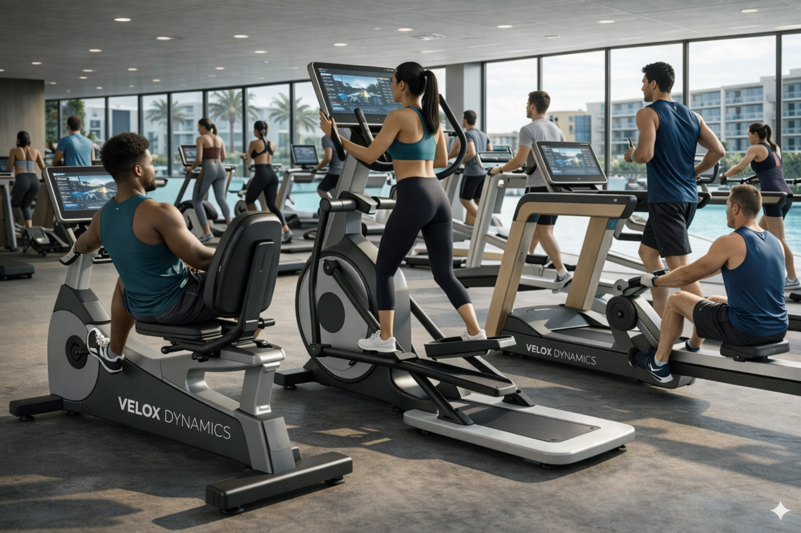
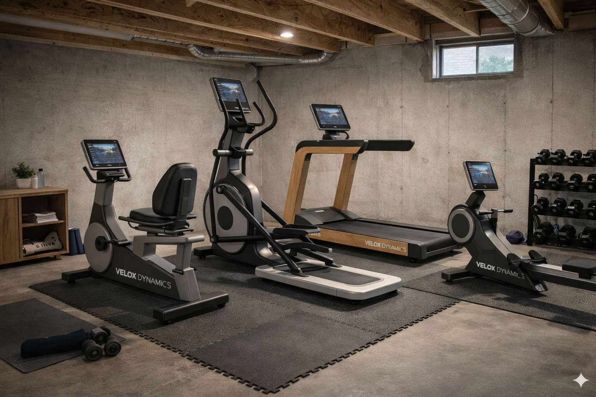
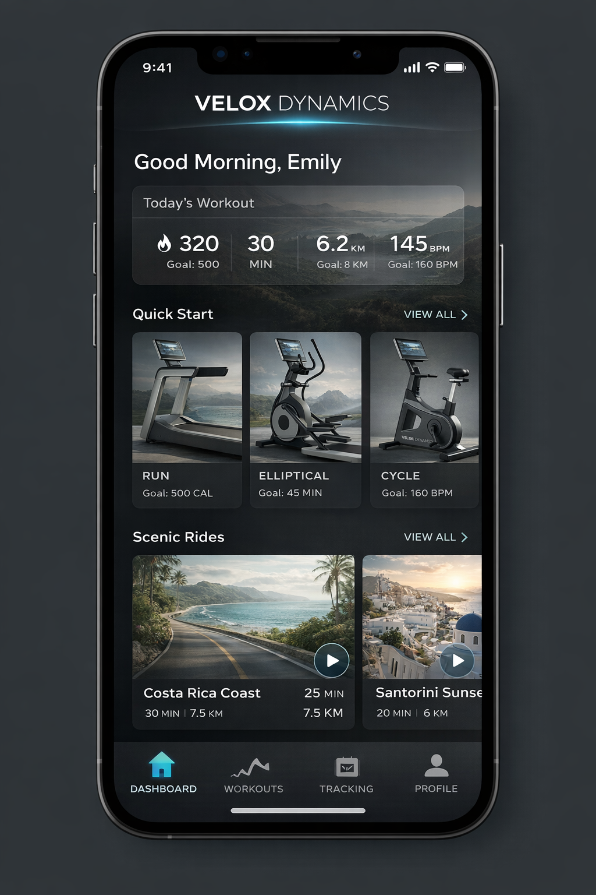
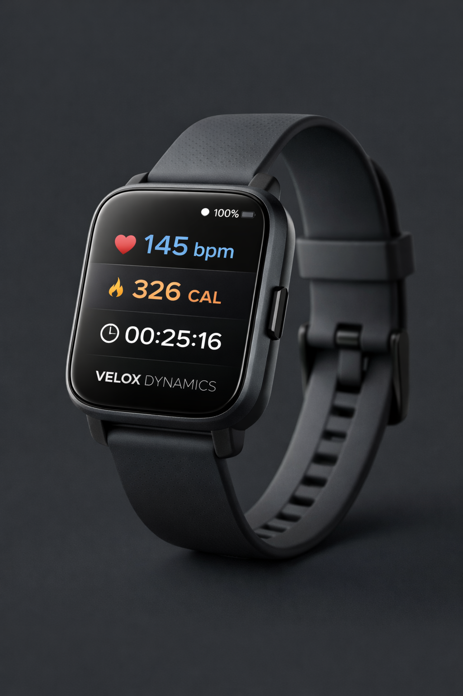

A flavour of the Belgian firm at the heart of the simulation — its origin, its products, its people and the strange governance that makes it interesting to run.
"Precision in motion."
Vélox Dynamics began in a Vilvoorde garage in the mid-1980s. Liesbeth Van Marcke, a Belgian materials scientist recovering from a serious cycling accident, had grown frustrated with the clumsy rehabilitation equipment she was prescribed. She teamed up with a doctoral student, built a precision-engineered instrumented exercise bicycle — and, to her surprise, the Belgian Olympic cycling team wanted one. The company was incorporated in 1987.

Forty years on, Vélox is a €420M business with 2,800 staff, a flagship campus at Cargovil in Vilvoorde, and a reputation for well-made fitness equipment that respects the biomechanics of the human body. Heritage engineering is the emotional core of the brand. The challenge — and yours, as the new CIO — is to carry that heritage into a very different digital and platform-driven industry without losing the soul of the company on the way.
A portfolio stretched across heritage hardware, home fitness, wearables, and the digital platform. The equipment still pays most of the bills; the platform is the bet on the future.

The 1987 founding product — an instrumented biomechanical-feedback exercise bike using aluminium-magnesium alloys. Built for professional cycling teams and physiotherapy clinics. Still the company's origin story.

Cardio equipment for clinics, studios and premium gyms — the slow-burn bestseller of the catalogue.

Home gym line built around resistance-rod technology and a connected platform — picked up from bankruptcy in 2024 and reshaped into a premium B2B offer.

Pandemic-era home fitness line — smart bikes, rowers and strength stations with live and on-demand classes. Revenue share grew from 8% to 28% in two years.

The subscription platform and its consumer-facing service: AI coaching, training plans, community challenges, and a growing roster of third-party complementors.

A newer line of wearables feeding biometric data into Vélox+ — the toe in the water of a very different business.
In 1991 Liesbeth transferred majority ownership to the Van Marcke Foundation for Health & Movement — a self-governing enterprise foundation whose mission is to fund research and programmes in health, rehabilitation and sustainability. A decade later, in 2001, Vélox listed on Euronext Brussels through a dual-class share structure: the Foundation holds the voting A-shares, the public holds the B-shares. The Foundation therefore retains durable control, while the company has access to public capital markets. This model of ownership mirrors many leading companies in Europe, such as Novo Nordisk, Maersk, Ikea, Bosch, and Carlsberg, and can be seen in India (Tata and Wimpro), the US (Bose, Patagonia and Hershey) and Austrilia (Ramsey Health Care)
That arrangement — mission-driven steward on one side, public shareholders on the other — is the strategic knife-edge of the simulation. Every major decision in the game sits in the tension between the two.
A few details that don't change the strategy — but do change the feel of the firm.
Vélox is profitable, well-regarded and holds a respected position in European fitness equipment. The core hardware franchise still pays the bills.
The industry is shifting toward connected, subscription-based, AI-coached experiences. Vélox has a platform — but faster, better-capitalised rivals are circling.
The Foundation prizes long horizons and social impact. It will back a bold strategy — but will not tolerate drift.
Public shareholders and an outspoken board want growth and margin. Your annual appraisal is not sentimental.
The rest of the story — the Foundation's governance, the executive team, the competitive landscape, the product portfolio in full, and the CIO's specific remit — is in the in-game case study that the player reads on day one.